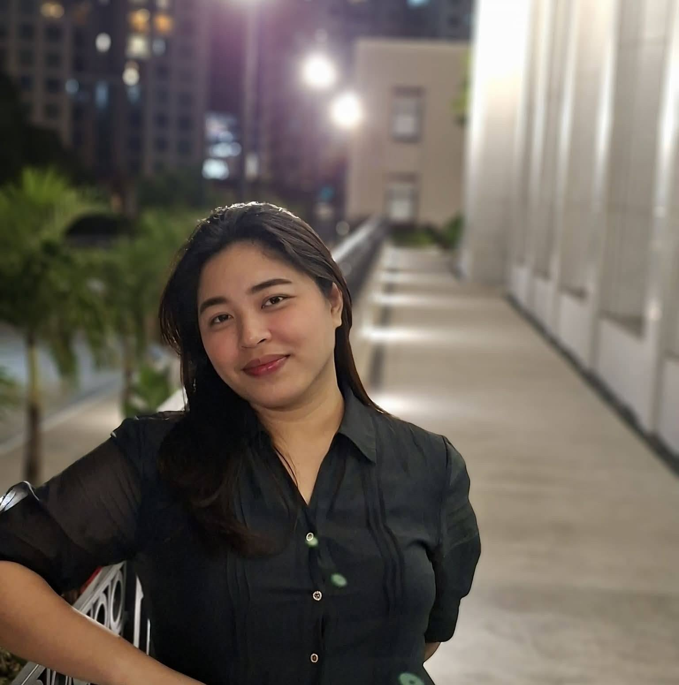

WDD 130 | Kely Jane Lopez

I enjoy reading books and learning new skills. I play Ukulele and planning to relearn Piano.
About Me
I am Kely Jane, a student currently learning web development. I enjoy reading books, learning new skills, and improving myself every day. I am passionate about building my future career and becoming successful while supporting my family.
My Goals
My goal is to become a skilled web developer and create meaningful projects. I want to continue learning programming, gain experience, and find opportunities that will help me grow professionally. I am determined to achieve a stable career and provide a better future for my family.